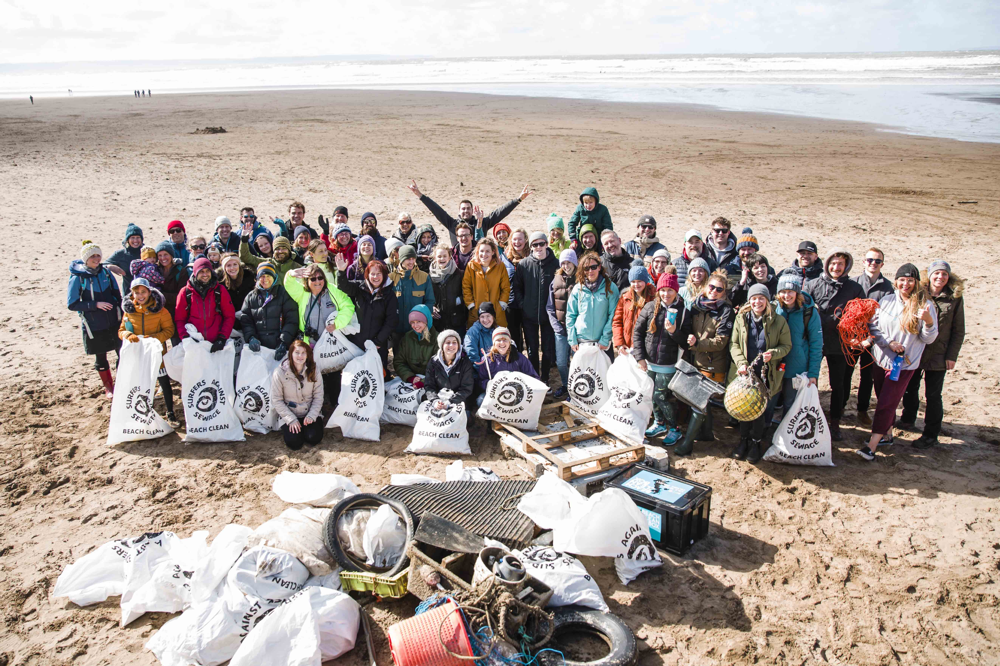

Junte-se a nossa equipe!
Nossa praias estão largadas ao deriva, vemos o Mar ser poluído em excesso pelos vazamentos de petróleo e despejo de dejetos que acabam degradando sua biodiversidade, que é tão importante para o nosso ecossistema. O Brasil é um dos maiores berços ecossistêmicos marinhos do mundo, tendo em sua Fauna e Flora uma rica quantidade de espécies marinhas. Nós da Plus Nature, estamos constantemente monitorando nossa Costa, porém são muitas praias e poucos voluntários para cobrir. Devido a crescente Pesca irregular e as Indústrias que liberam seus dejetos químicos na natureza, nossa equipe está com uma grande dificuldade para lidar com estas situações. Junto as ONGs que já atuam em nosso País, estamos em constante luta, agregando novos parceiros e a procura de voluntários. Pensando nas gerações futuras e no que podemos deixar a elas, de recursos naturais e manter a vida destes animais e das plantas que ali vivem, convidamos a todo cidadão Brasileiro que se junte a nós nessa importante luta para salvar o Futuro de nossas crianças, preservar a vida em nosso País. Assim como um dos grandes exemplos de luta a favor da natureza disse: Juntos podemos fazer a diferença. Mais do que nunca, é importante todos seguirmos na mesma direção, com a solidariedade coletiva, para que possamos atravessar essa crise da melhor forma possível. E JUNTOS!